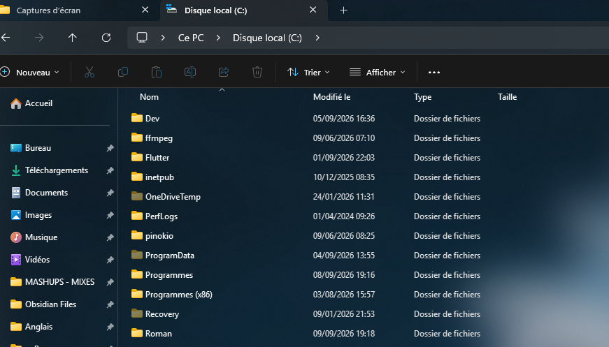
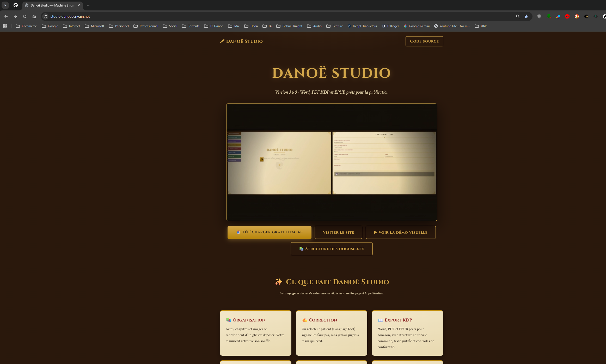
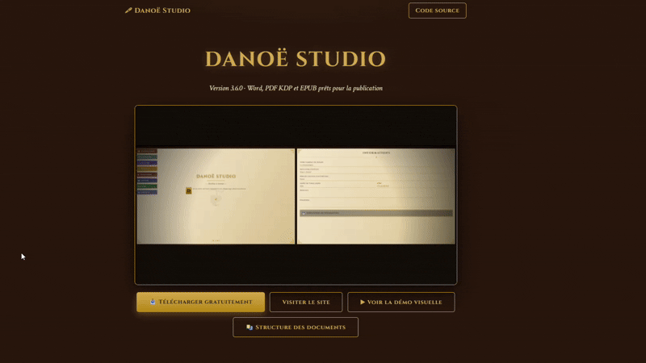
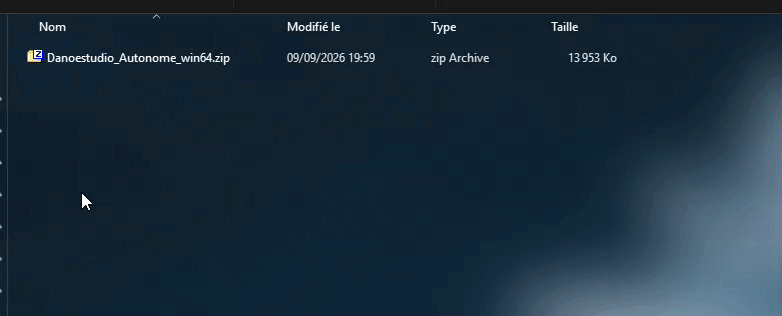
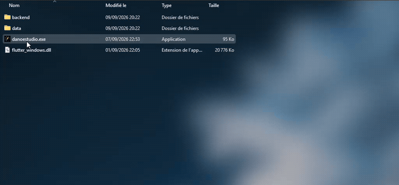
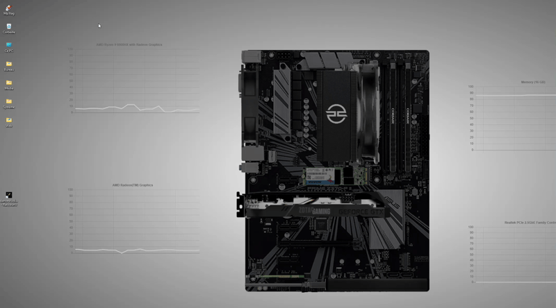

1Créez un dossier de préférence sur votre disque C:
Ici, il est nommé « Roman ». Ce dossier accueillera l'application décompressée.

Six étapes pour installer Danoë Studio sur votre ordinateur Windows.
Suivez ces étapes dans l'ordre pour installer l'application en quelques minutes.
Ici, il est nommé « Roman ». Ce dossier accueillera l'application décompressée.

Rendez-vous sur studio.danoeecrivain.net puis cliquez sur « Télécharger gratuitement ».

Le lien vous redirige vers la page des releases GitHub de Danoë Studio.

Il contient l'application et tout ce qu'il faut pour fonctionner de manière autonome.


... Et voici que la magie opère !
